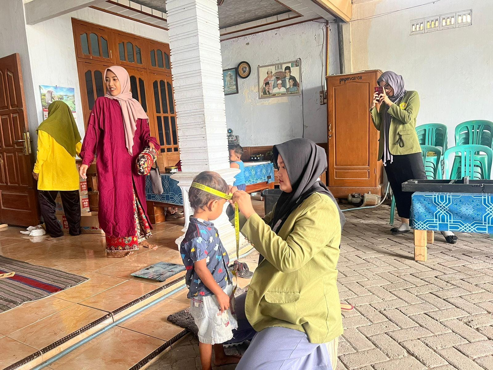
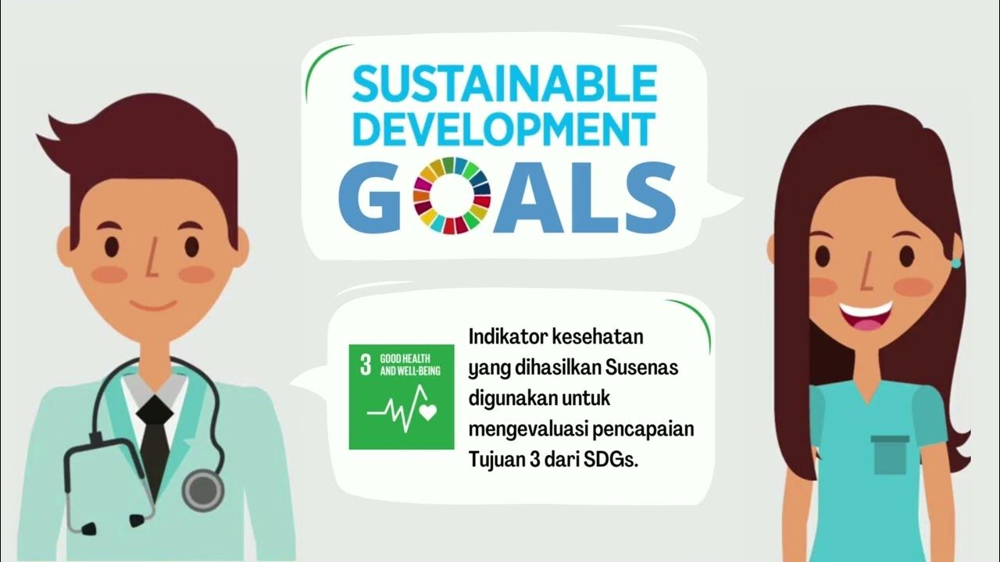
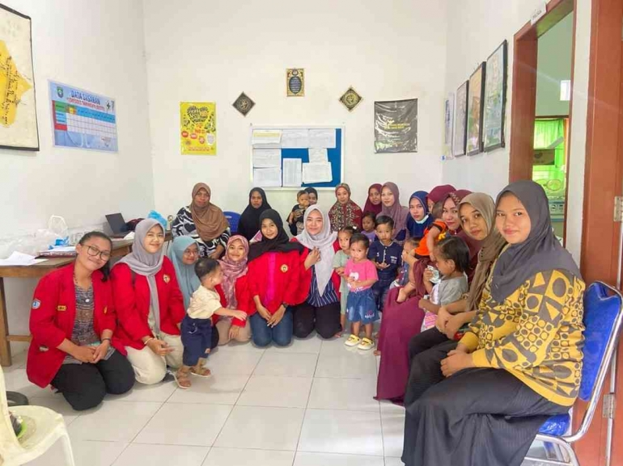
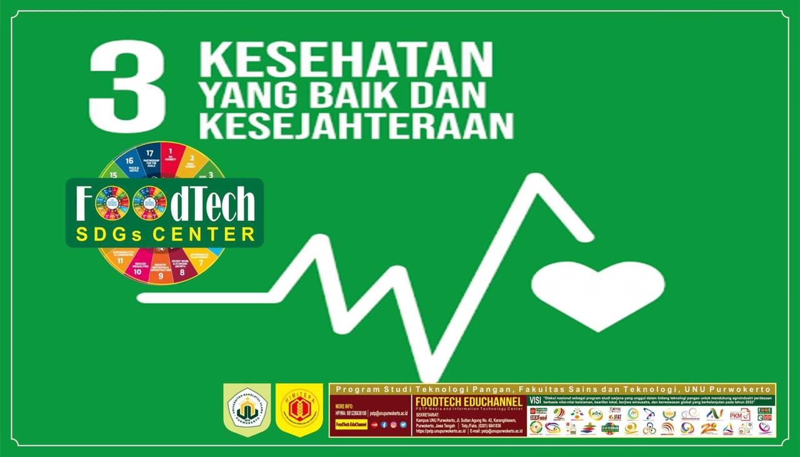

   
Saya memilih SDGS Kesehatan. Tujuan SDGs nomor 3, Kesehatan dan Kesejahteraan yang Baik, memiliki hubungan erat dengan upaya yang bisa menciptakan masyarakat yang produktif dan berkelanjutan. Tujuan ini menekankan pentingnya menjamin akses layanan kesehatan yang berkualitas, mendorong pencegahan penyakit, memperbaiki pola hidup sehat, dan memastikan kesejahteraan fisik serta mental bagi semua orang di segala usia. Kesehatan yang baik menjadi fondasi bagi pembangunan karena masyarakat yang sehat dapat berkontribusi lebih maksimal dalam pendidikan, pekerjaan, dan kehidupan sosial. Upaya mencapai tujuan ini melibatkan penyediaan infrastruktur kesehatan, akses ke obat-obatan esensial, peningkatan nutrisi, pengendalian penyakit menular, dan pengurangan angka kematian ibu, bayi, serta balita. Dengan memastikan kesehatan dan kesejahteraan yang baik, kita tidak hanya meningkatkan kualitas hidup individu, tetapi juga mendorong pertumbuhan ekonomi dan memperkuat ketahanan sosial.
1. Program Vaksinasi Massal: Pelaksanaan vaksinasi COVID-19 di berbagai negara merupakan langkah nyata untuk mencegah penyebaran penyakit, melindungi kesehatan masyarakat, dan memulihkan aktivitas sosial-ekonomi. Ini mendukung target pencegahan dan pengendalian penyakit menular.
2. Peningkatan Akses Layanan Kesehatan: Pembangunan pusat kesehatan di daerah terpencil atau pedesaan untuk memastikan semua orang, termasuk kelompok rentan, mendapatkan layanan kesehatan berkualitas tanpa diskriminasi.
3.Kampanye Hidup Sehat: Promosi gaya hidup sehat melalui kampanye anti-merokok, olahraga teratur, dan pola makan bergizi untuk mencegah penyakit tidak menular seperti diabetes, hipertensi, dan penyakit jantung.
4.Penyediaan Air Bersih dan Sanitasi: Meningkatkan akses air bersih dan fasilitas sanitasi di komunitas untuk mengurangi penyakit yang ditularkan melalui air, seperti diare.
5. Pemberdayaan Masyarakat: Pelibatan masyarakat dalam pelatihan kader kesehatan desa untuk membantu memberikan edukasi kesehatan dasar dan layanan medis darurat.
6. Layanan Kesehatan Mental: Penyediaan pusat konseling, hotline krisis, dan pelatihan bagi tenaga medis untuk mendukung individu yang mengalami gangguan kesehatan mental, seperti depresi dan kecemasan.


{kind=link}